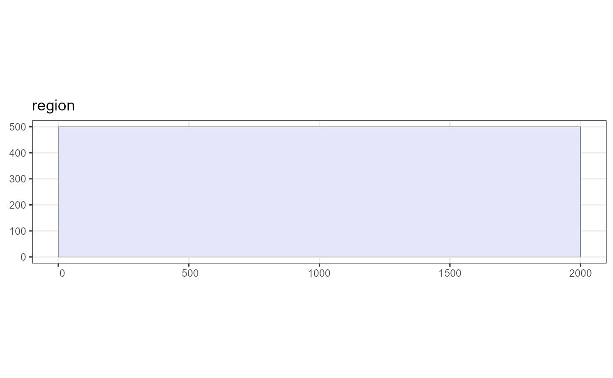

This creates an instance of the Region class which defines the study area for the survey.
Arguments
- region.name
the region name
- strata.name
the strata names (character vector, same length as the number of areas in the shapefile / sf object). If not supplied "A", "B", "C", ... will be assigned. The strata names should be provided in the order they appear in the shapefile. See details.
- units
measurement units; either
"m"for metres or"km"for kilometres. If the shapefile has a projection file associated with it the units will be taken from there.- shape
shapefile path to .shp file or an sf object of class sf, sfc or sfg.
- dist.for.win
logical indicating if the region is being created via Distance for Windows (default = FALSE). See details.
Details
The strata names should be provided in the order the strata are presented in the shapefile or sf shape object. This can be simply checked after creating the region by plotting it and checking that the key correctly identifies the strata. Note that the order Distance for Windows displays the strata in sometimes differs from the order in which they are stored in the shapefile. If running from Distance for Windows then this will be checked and if they don't match a warning will be displayed saying that they are being re-ordered.
Examples
# A basic study rectangular study region
region <- make.region()
plot(region)

#Load the region from a projected shapefile
shapefile.name <- system.file("extdata", "TrackExample.shp", package = "dssd")
region <- make.region(region.name = "study area",
shape = shapefile.name)
plot(region)
#Load a multi strata unprojected shapefile
shapefile.name <- system.file("extdata", "AreaRStrata.shp", package = "dssd")
# Need to load shapefile first as it is not projected
sf.shape <- sf::read_sf(shapefile.name)
# Check current coordinate reference system
sf::st_crs(sf.shape)
#> Coordinate Reference System:
#> User input: WGS 84
#> wkt:
#> GEOGCRS["WGS 84",
#> DATUM["World Geodetic System 1984",
#> ELLIPSOID["WGS 84",6378137,298.257223563,
#> LENGTHUNIT["metre",1]]],
#> PRIMEM["Greenwich",0,
#> ANGLEUNIT["degree",0.0174532925199433]],
#> CS[ellipsoidal,2],
#> AXIS["latitude",north,
#> ORDER[1],
#> ANGLEUNIT["degree",0.0174532925199433]],
#> AXIS["longitude",east,
#> ORDER[2],
#> ANGLEUNIT["degree",0.0174532925199433]],
#> ID["EPSG",4326]]
# Define a European Albers Equal Area projection
proj4string <- "+proj=aea +lat_1=43 +lat_2=62 +lat_0=30 +lon_0=-9 +x_0=0 +
y_0=0 +ellps=intl +units=km"
# Project the study area on to a flat plane
projected.shape <- sf::st_transform(sf.shape, crs = proj4string)
# Create region with default strata names
region <- make.region(region.name = "study area",
shape = projected.shape)
#> Warning: Automatically naming strata as no (or incorrect number of) strata names provided. Assigned strata names: A, B, C, D, E, F
# By plotting the region we can verify the order of the strata
plot(region)